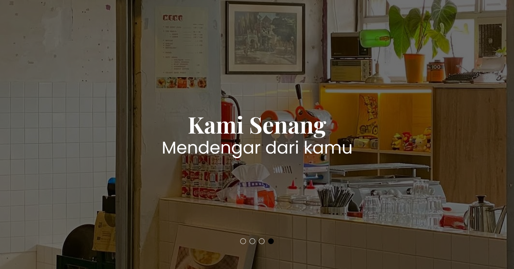
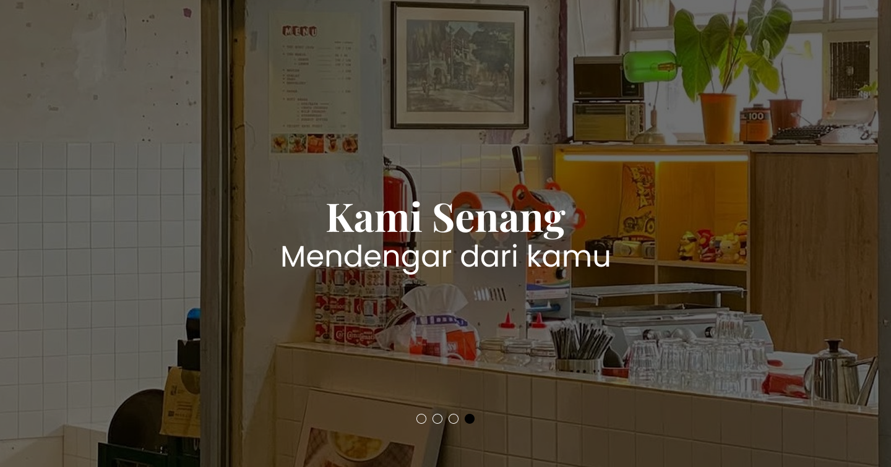

Kedai Jaya Bersama merupakan usaha kuliner yang resmi didirikan oleh Jo pada 13 April 2024. Mengusung konsep khas makanan kedai Medan, kedai ini bertujuan menyajikan cita rasa autentik bagi para pelanggannya. Lokasinya berada di The Hallway Space, Pasar Kosambi, Jalan A. Yani Lantai 2, Kebon Pisang, Kecamatan Sumur Bandung, Kota Bandung. Jawa Barat 40112. Operasional berlangsung setiap hari dar i pukul 09.00 pagi hingga 21.00 malam. Usaha ini dijalankan oleh tim yang terdiri dari empat orang karyawan, dengan fokus utama pada sektor barista. Harga yang ditawarkan cukup terjangkau, berkisar antara Rp8.000 hingga Rp20.000. Dalam hal promosi, Kedai Jaya Bersama mengandalkan media sosial Instagram dan layanan GoFood. Jo memilih untuk mengembangkan usaha ini secara organik, tanpa mengikuti tren pasar secara langsung, dan tetap fokus pada keunikan produk sendiri. Rencana ke depan mencakup pembukaan cabang baru di Jalan Cemara, Bandung, serta penambahan karyawan.
Kedai Jaya Bersama merupakan usaha kuliner yang resmi didirikan oleh Jo pada 13 April 2024. Mengusung konsep khas makanan kedai Medan, kedai ini bertujuan menyajikan cita rasa autentik bagi para pelanggannya. Lokasinya berada di The Hallway Space, Pasar Kosambi, Jalan A. Yani Lantai 2, Kebon Pisang, Kecamatan Sumur Bandung, Kota Bandung. Jawa Barat 40112. Operasional berlangsung setiap hari dar i pukul 09.00 pagi hingga 21.00 malam. Usaha ini dijalankan oleh tim yang terdiri dari empat orang karyawan, dengan fokus utama pada sektor barista. Harga yang ditawarkan cukup terjangkau, berkisar antara Rp8.000 hingga Rp20.000. Dalam hal promosi, Kedai Jaya Bersama mengandalkan media sosial Instagram dan layanan GoFood. Jo memilih untuk mengembangkan usaha ini secara organik, tanpa mengikuti tren pasar secara langsung, dan tetap fokus pada keunikan produk sendiri. Rencana ke depan mencakup pembukaan cabang baru di Jalan Cemara, Bandung, serta penambahan karyawan.

+62 85723413081
@kedaijayabersama